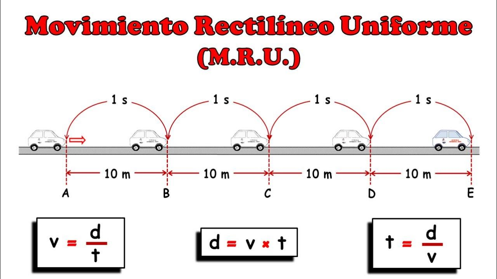

El M.R.Ues el denominado movimiento rectilíneo uniforme, es decir, es un movimiento, en línea recta, y como nos dice uniforme, quiere decir que va todo el rato a la misma velocidad, cuando
algo ni aumenta ni disminuye su velocidad, es porque su aceleración es cero.

Comportamiento del movimiento
El MRU se caracteriza por:
Movimiento que se realiza sobre una línea recta.
Velocidad constante; implica magnitud y dirección constantes.
La magnitud de la velocidad recibe el nombre de celeridad o rapidez sin aceleración.
Fórmula para hallar la distancia en MRU: Distancia = Tiempo * Velocidad
Fórmula para hallar la velocidad en MRU: Velocidad = Distancia / Tiempo
Fórmula para hallar el tiempo en MRU: Tiempo = Distancia / Velocidad
Condiciones del MRU
Video tutorial para comprender mejor el tema de MRU